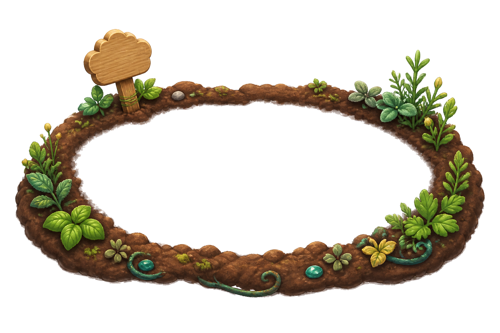
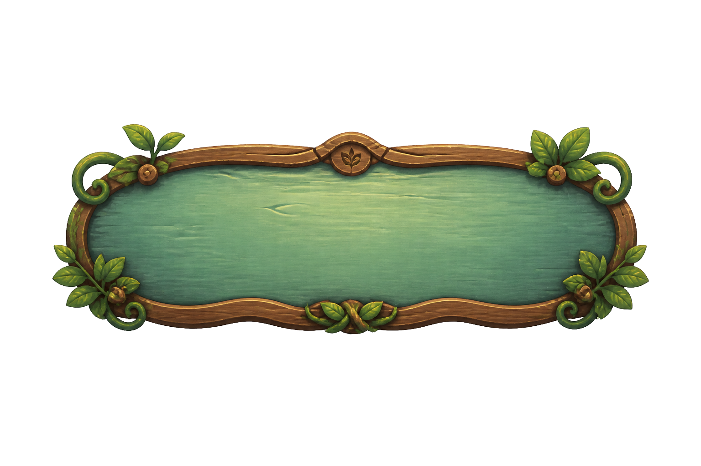
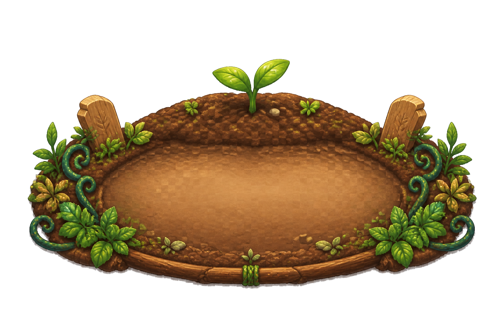
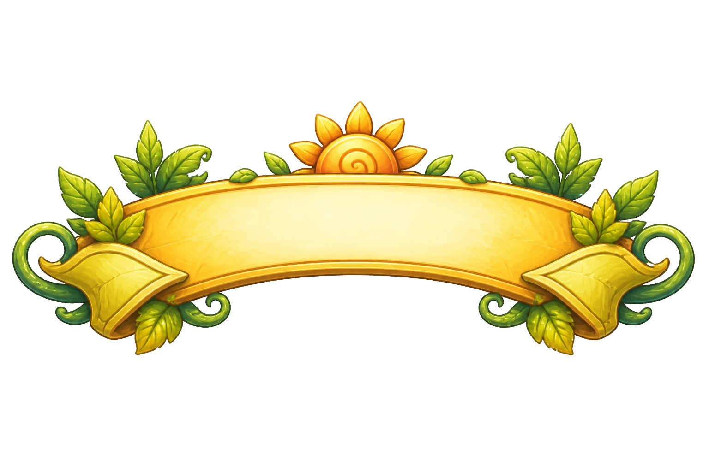

Garden HUD Plot Marker Preview
PR1 candidate composition only. Manifest/runtime acceptance waits for PR2 GardenPlotCard screenshots.


빈 자리

성장 64%

수확!
PR1 candidate composition only. Manifest/runtime acceptance waits for PR2 GardenPlotCard screenshots.



